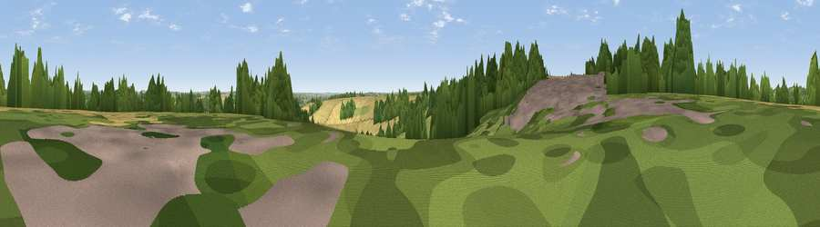

Deddington Hill
#34697 in England · top 74% of its area beats it · near WarmingtonThe view, rendered

A 360° render of this exact spot computed from the terrain model, tree cover and land cover — summer colours, afternoon light, calibrated against photographs of famous viewpoints. Real trees, hedges and buildings will differ in detail.
The panorama
Grey silhouette: terrain skyline in each direction (720 bearings, Earth curvature and refraction included). Dashed green: skyline with trees (+15 m) and buildings (+8 m) as obstacles. Blue strip: how far the ground is visible on each bearing.
Where the view opens
Wedge length = distance to the farthest visible ground on that bearing (vegetation-aware). Rings at 10, 25 and 50 km.
What fills the view
41% grassland · 28% cropland · 25% woodland · 6% built-up
Angular shares of the visible panorama (visual magnitude), not map area. Landscape diversity 0.54 (0–1 Shannon).
Key numbers
More beautiful places nearby
The staircase of upgrades: each row has a higher view potential than everything closer. Driving times are estimates from straight-line distance, calibrated against real road routing — check an actual route before setting out.
| Place | Direction | Drive | Score |
|---|---|---|---|
| Viewpoint near Farnborough | N · 3 km | ~7 min | 56.1 |
| Viewpoint near Radway | WNW · 4 km | ~8 min | 71.7 |
| Viewpoint near Ilmington | WSW · 21 km | ~36 min | 72.6 |
| Viewpoint near Meon Vale | W · 24 km | ~39 min | 77.0 |
| Broadway Hill | WSW · 32 km | ~50 min | 77.7 |
| Viewpoint near Elmley Castle | W · 44 km | ~65 min | 80.5 |
| Bredon Hill | W · 46 km | ~67 min | 83.0 |
| North Hill | W · 64 km | ~87 min | 86.8 |
52.12165, -1.39609 · source: osm peak · position refined by local search. Computed location — check access rights before visiting.